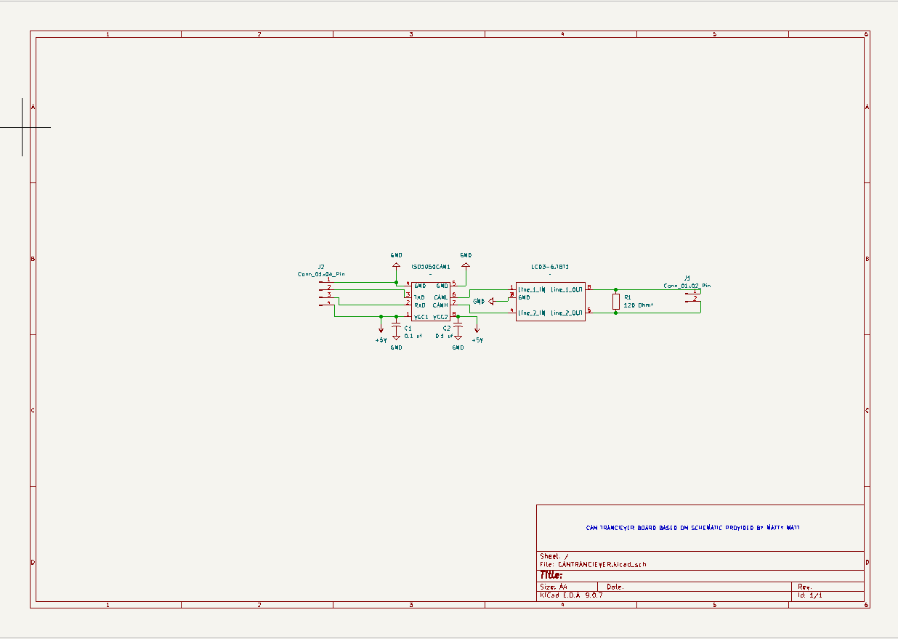
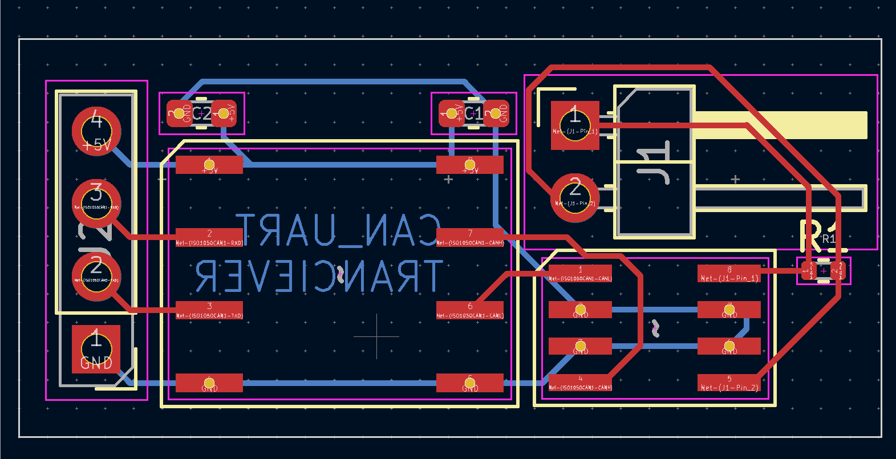
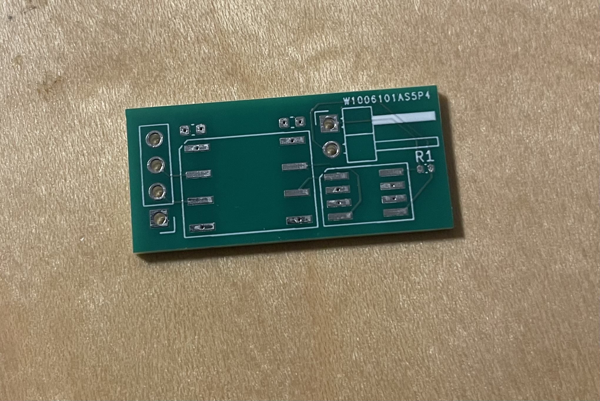

Schematic Design
The schematic was designed in KiCad based on a reference circuit supplied by a mentor.
The objective of this project was to design and manufacture a PCB that allows UART-capable devices to communicate over a CAN network.
The primary constraints of the project were budget and location. The total project cost had to remain under $50 CAD, and all development was completed in Nelson while working remotely from standard lab resources. Testing and prototyping were performed without access to professional lab equipment, and only enough components for three boards were available.
This project consisted of five main stages:
The schematic was designed in KiCad based on a reference circuit supplied by a mentor.

To prototype the PCB, the components were soldered onto hardboard and tested using a setup consisting of two Arduinos.

The PCB layout was created in KiCad. The process involved selecting component footprints, creating the board layout, and routing the traces. The completed design was then sent to PCBWay for manufacture.

The final board was manufactured with the help of PCBWay and produced as a physical PCB for assembly and testing. The board has yet to be assembled due to a lack of parts.
